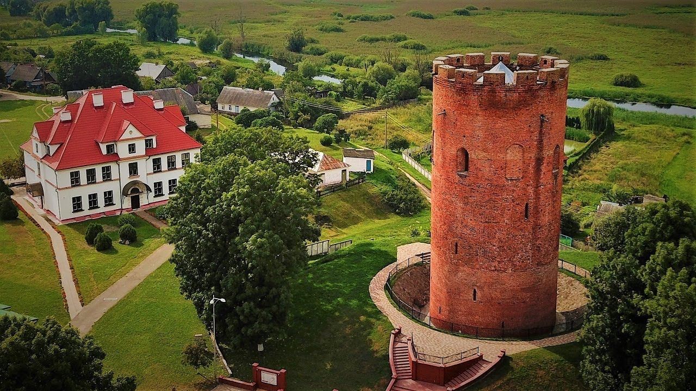
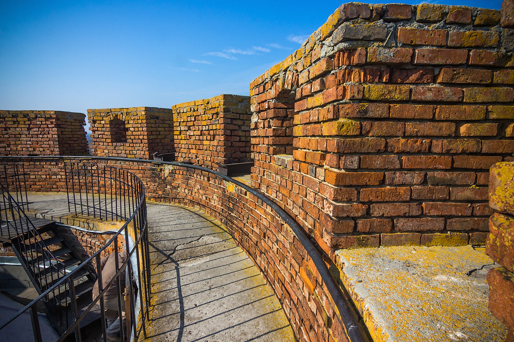

.
Каменецкая башня

В городе Каменец Брестской области находится уникальный памятник
архитектуры и оборонительного зодчества второй половины XIII века –
Каменецкая башня (Каменецкий столп, Каменецкая вежа). На холме у некогда
полноводной реки Лесной возвышается величественное строение, похожее на
огромную шахматную ладью. Согласно летописям, Каменецкая башня возведена
между 1276 и 1288 годами. По приказу галицко-волынского князя Владимира
Васильковича зодчий Алекса нашел место, где вскоре появились город и Вежа
с деревянным замком. Каменецкая вежа относится к типу волынских и имеет
общие черты с башнями-донжонами, распространенными в XII-XIII веках в
Западной Европе. Пятиярусное круглое в плане сооружение (высота около 30
м, толщина стен 2,5 м, наружный диаметр 13,6 м) стоит на каменном
фундаменте высотой около 2,3 м и диаметром 16 м. Башня сложена из кирпича
темно-красного и желтоватого цветов. Вежа в Каменце была оборонительной и
имеет мало элементов архитектурно-декоративной пластики: узкие бойницы, 4
плоские ниши с полуциркульными завершениями. Верхнюю площадку окружают 14
прямоугольных зубцов с отверстиями для обзора, по периметру особым образом
выложена декоративная полоса. Подобные башни в Средние века существовали
во многих городах Беларуси: Бресте, Гродно, Мстиславле, Мяделе,
Новогрудке, Полоцке, Радошковичах, Турове, Шклове, но до наших дней
сохранилась только Каменецкая. В этом ее уникальность. В XIV-XVII веках
башня выдерживала набеги крестоносцев, штурмы войск польских и литовских
князей, у ее стен сражались армии Речи Посполитой, Швеции и Московского
государства. К XIX веку Каменецкая вежа утратила оборонительное значение,
была заброшена.

В 1822 году ее пытались разобрать на кирпич, но за века кладка
превратилась в настоящий камень. Остатки земляного вала и деревянного
замка исчезли в 1903 году при проведении реставрационных работ. По проекту
архитектора Суслова вокруг башни сняли слой земли, и первый ярус, который
ранее считали погребом, вновь оказался на поверхности. Вокруг башни
насыпали и обложили камнем кольцевой вал. В таком виде памятник сохранился
до наших дней. В начале 1950-х годов башню впервые побелили, а пол
вымостили камнем. Реставрационные работы проводились в 1968-1973 и
1996-2003 годах. С Каменецкой башней связано много легенд, правдоподобных
и фантастических. Например, что каменный столп – памятник неизвестному
великану, который строил вежу.